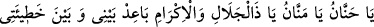

Senin vücûdunda hükümran olan ahlâk ve huy ne ise
Senin o sûret üzere haşrolman vacibdir.
Akıl sahibine gereken, kendini kötü huylardan temizlemek; kalbini dünyevî alâka
kirinden arındırmak; gerçekten sâlih ameller ve sözlerle Allah’ın rızâsını kazanmaya
çalışmaktır. Ta ki ihtiyacı olduğu günde Rabbi katında bunları bulsun ve mutluluğa ersin.
Peygamberimiz (s.a.) şöyle buyurmuşlardır: “Kıyâmet gününde insanlar o güne
kadar olmadıkları kadar aç; o güne kadar olmadıkları kadar susuz; o güne kadar
olmadıkları kadar çıplak; o güne kadar olmadıkları kadar yorgun haşrolunurlar. Kim
Allah için yedirirse, Allah da onu doyurur; kim Allah (ın kullarını)’ı içirirse Allah da
onu içirir; kim Allah (ın kullarını)’ı giydirirse Allah da onu giydirir. Kim de Allah
için amel ederse Allah ona yeter.”[26]
Peygamberimiz (s.a.) şöyle duâ ederdi:
“Ey çok şefkatli, ey daima veren, ey celâl ve ikrâm sahibi Rabbim! Doğu ile batının
arasını nasıl uzaklaştırdın ise, beni günahlarımdan öyle uzaklaştır. Beyaz bir elbise
pislikten nasıl temizlenirse, beni de günahlarımdan öyle temizle. Beni kar ve dolu
suyuyla yıka. Allah’ı tesbih ederim, O’na hamdederim. Yüce Allah’dan mağfiret
dilerim. O’na tevbe ederim.”[27]
Peygamberimiz (s.a.) bir gün etrafındaki ashâbına bakmış ve şöyle buyurmuştur: “Ey
insanlar! Kendinizi beğenmeyiniz, amellerinizin çokluğuna, günahlarınızın azlığına
aldanmayınız. Bir kimsenin âkıbetinin ne olduğunu görmeden de kimseye
imrenmeyiniz.”[28]
Yine Peygamberimiz (s.a.) şöyle buyurmuştur: “Ameller hâtimelerine; yani sonlarına
göredir. Sizden biriniz yetmiş peygamberin ameliyle de gelse, kıyâmet gününün ona
getirdiği korku dolayısıyla daha fazlasını temennî edecektir.”[29] Yani keşke daha
fazla amelle gelseydim, diyecektir.
[25]. İbn Arrâk, II, 277.
[26]. Deylemî, hadis no: 8783 Münâvî, V, 33.
[27]. Buhârî, Deavât, 39; Müslim, Mesâcid, 147; Ebû Dâvûd, Salât, 121.